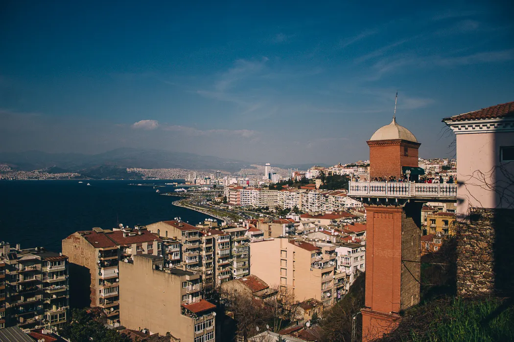

Bu gezi rehberi sitesi, Türkiye'nin en güzel 5 yerini tanıtmaktadır.
İzmir'in simgelerinden biri olan Konak Meydanı, tarihi saat kulesi ve çeşmesi ile ünlüdür.
Canlı ve renkli atmosferiyle ünlü Alsancak, İzmir'in merkezi bir semtidir ve birçok kafe, restoran ve mağazaya ev sahipliği yapar.
İzmir'in en popüler yürüyüş ve dinlenme alanı olan Kordon Boyu, Ege Denizi'nin muhteşem manzarasına sahiptir.
Tarihi Asansör, İzmir'in sembollerinden biridir ve şehrin panoramik manzarasını sunar.
